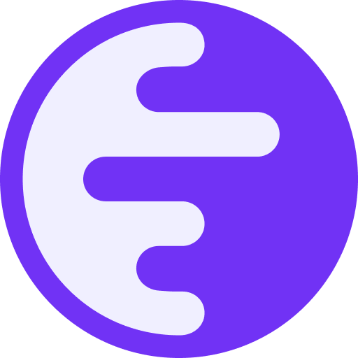

Genuine question. We will wait.
Where every graduated pool’s LP tokens go. No key, no timelock, no multisig — nobody left who could move it.
| Fee | When | Now | Ceiling in the contract |
|---|---|---|---|
| Trade | every buy and sell on the curve | 1% | 2% |
| Graduation | once, out of the 4 ETH raised | 5% | 10% |
| Creation | once, to deploy a token | 0.00061 ETH | 0.01 ETH |
| Pool swap | after graduation · 0.25% to LPs, 0.05% to us | 0.30% | hardcoded |
That is the list. If you find a fifth, it is a bug and we want the report.

Ink calls itself the network for global finance.
price ∝ (1 + ETH)², graduation at 4 ETH, LP burned. Checkable before you buy, not explained after you lose.